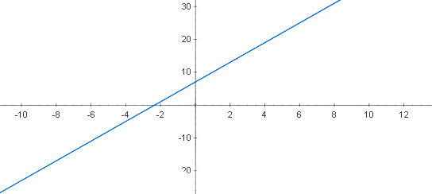
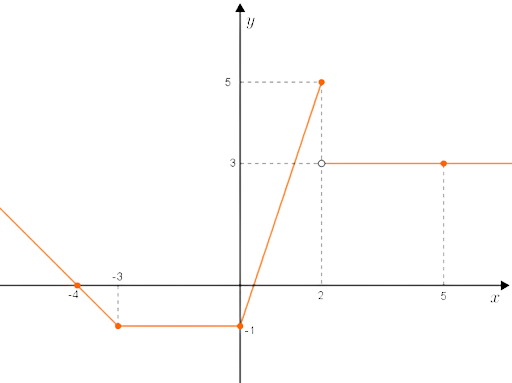
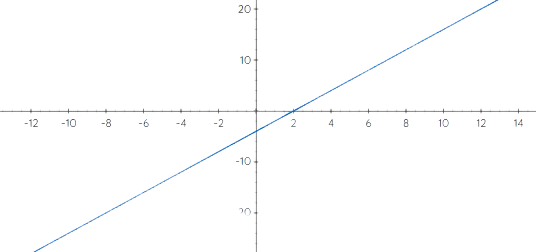

Definição
A função afim é toda função f
cuja lei de formação pode ser escrita na forma
f(x) = ax+b, onde a e b pode
assumir qualquer número real.
Função do Primeiro Grau: É toda função
afim dada por f(x) = ax + b, em que o
coeficiente a é diferente de 0 e o
coeficiente b é zero ou não.
Gráfico de uma Função Afim
O gráfico de uma função afim é dada
por uma reta. O coeficiente “a” é o
chamado coeficiente angular e o coeficiente
“b” é chamado de coeficiente linear.


Nós temos uma ferramenta que te mostra o esboço do gráfico, confira: Gráfico Dinâmico!
Raiz Ou Zero de uma Função
Zero de uma função é o valor que x
tem que assumir para y ser igual a 0,
ou seja f(x) = 0.
Para encontrar o valor de x, basta
igualar a zero e resolver a equação,
como no exemplo:
Qual o zero da função f(x) = 2x -4 ?
2x -4 = 0 → 2x = 4
x = 4/2 → x = 2
O zero da função 2x -4 é igual a 2, como
mostra no gráfico, a raiz é onde corta
o eixo x:

Nós também temos uma ferramenta que calcula a raiz para qualquer função, confira: Calcular as Raizes!